A4I Launch Event
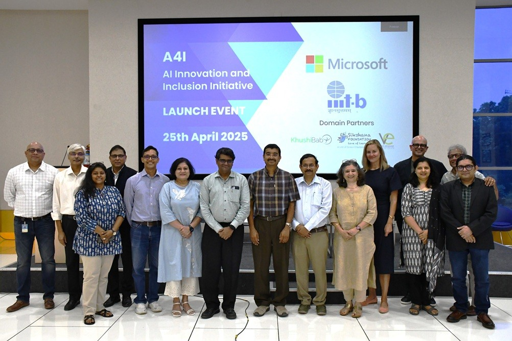On 25 April 2025, the A4I (AI Innovation for Inclusion Initiative) was formally launched at the IIIT Bangalore campus in Bengaluru, co-hosted by IIITB and Microsoft. The event brought together senior dignitaries from government, industry, philanthropy, and media to inaugurate A4I’s mission of leveraging artificial intelligence for social impact. Over 60 attendees—including senior IAS officers from the Indian and Karnataka governments, senior executives of philanthropic foundations, technology executives, and media representatives—participated in the launch. Uma Mahadevan, Development Commissioner and Additional Chief Secretary, Government of Karnataka, was the chief guest. Kate Behncken, Corporate Vice President, Microsoft Philanthropies, was the guest of honor. Prof Debabrata Das, Director, IIIT Bangalore, was the dignitary host of the event.
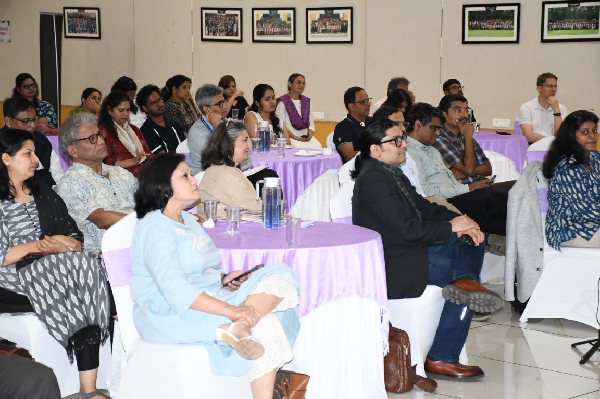 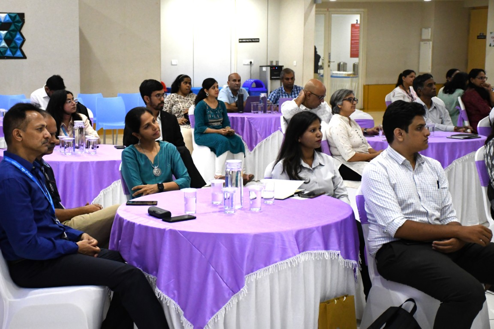
The key moments of the event are captured below.
Welcome Address by Prof Debabrata Das, Director, IIIT Bangalore
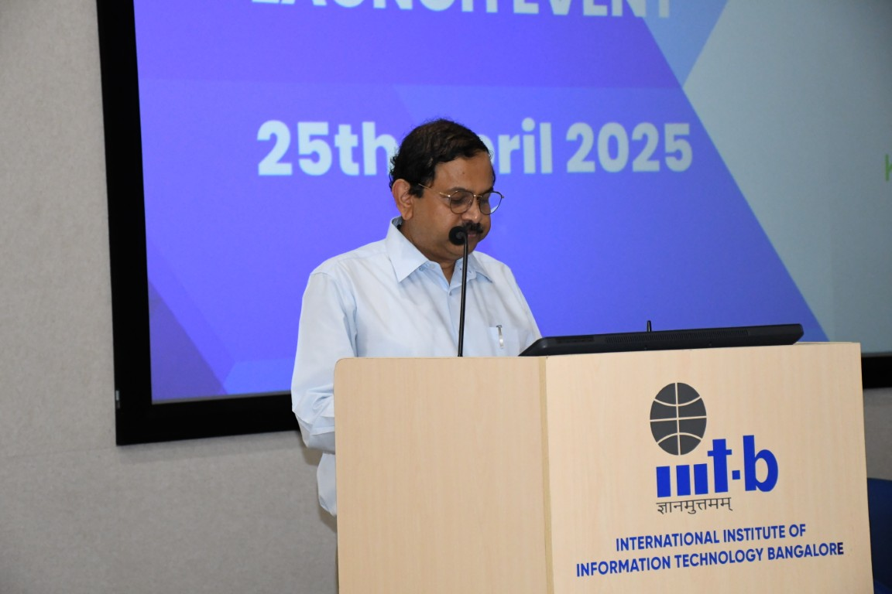Prof Das opened the event by welcoming all attendees and outlining IIITB’s commitment to inclusive innovation. He highlighted the institute’s history of fostering research that addresses societal challenges across health, education, and livelihoods and introduced A4I as a natural extension of this mission. Emphasizing the importance of partnerships, particularly with Microsoft, he set the tone for collaborative, population-scale AI solutions for underserved communities.
Introduction to A4I by Venkat Padmanabhan, MD, Microsoft Research, India
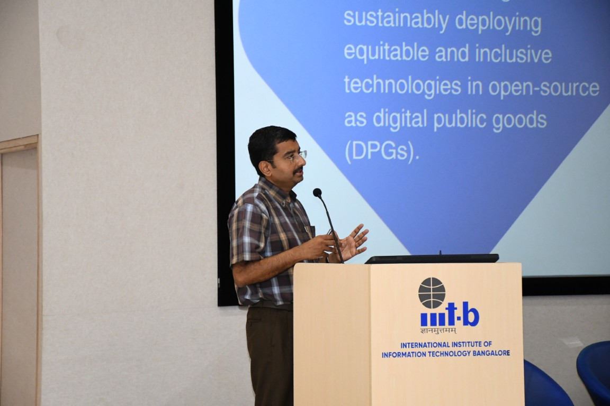Venkat provided a concise overview of A4I’s objectives, governance structure, and intended impact. He explained how Microsoft innovation enablement and research depth complement IIITB’s on-ground engagement and platform-building capabilities, positioning A4I to co-develop open-source platforms that address real-world problems.
Guest of Honor Address by Kate Behncken, Corporate Vice President, Microsoft Philanthropies
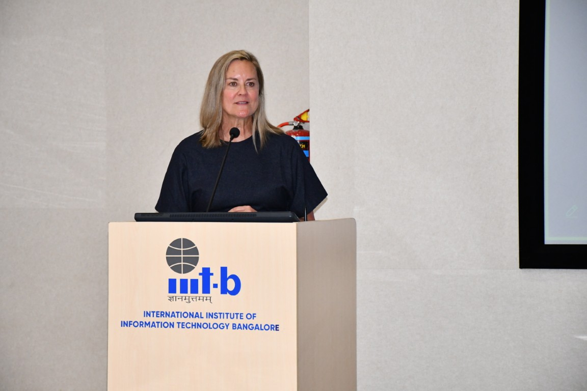
Kate spoke about the rapid technological growth driven by the “AI economy” in education, healthcare, and agriculture. She highlighted Microsoft Philanthropies’ strategic focus on skilling, aiming to train 10 million people in India by 2030, which is projected to generate 2.73 million local jobs. Through these efforts, she emphasized, AI can reshape economies and transform how communities live and work.
To conclude her session, Kate played a short video of Microsoft's CEO, affirming the company's commitment to cutting-edge technology and societal impact.
Keynote Address by Uma Mahadevan, Development Commissioner and Additional Chief Secretary, Government of Karnataka
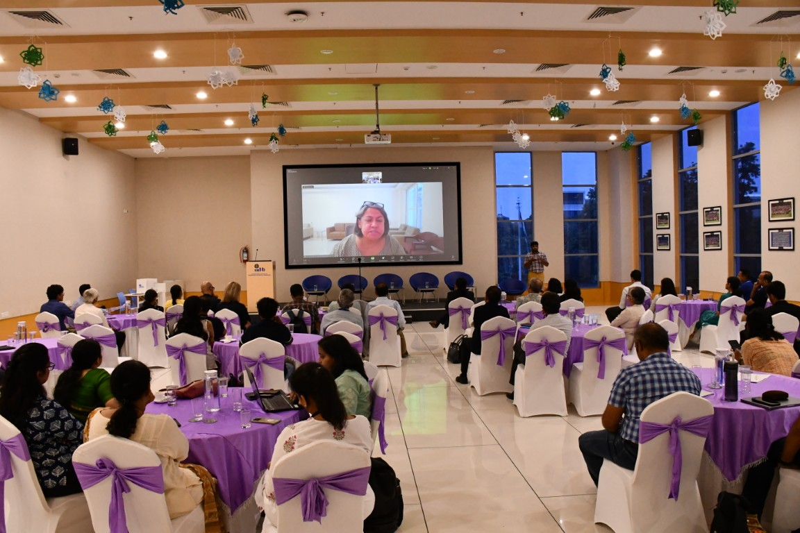Joining virtually as Chief Guest, Uma spoke about AI’s growing potential in driving development and sustainability within education and healthcare. She urged stakeholders to be ambitious, rather than aiming only for “last-mile” reach, and underscored that AI can empower even illiterate and semi-literate populations to contribute locally. “We shouldn’t aim to reach people at the ‘last mile,’ but rather, right from the start, we should be even more ambitious in demanding solutions from technology. AI has the potential to solve problems in human development. With it, we can allow even the illiterate and semi-literate population to contribute at the local level.”
Panel Discussion: “Research-Accelerated Philanthropy”
An insightful session moderated by Somanna Palacanda (International Social Impact Leader, Microsoft Philanthropies). This panel featured:
- Shivkumar Kalyanaraman (CEO, ANRF)
- Arjun Venkatraman (Program Officer, Digital & AI, Gates Foundation)
- Tanuja Ganu (Director, Research Engineering, Microsoft Research, India)
- Amit Prakash (Professor & HoD, Digital Humanities, IIITB)
Presentation by Domain Partners
Representatives from five domain partners—Khushi Baby Association, Sikshana Foundation, Vision Empower Trust, Digital Greens, and NIMHANS—spoke about their respective initiatives. Each partner highlighted their solutions and how AI is amplifying their on-ground impact, laying the groundwork for the future evolution of the solutions.
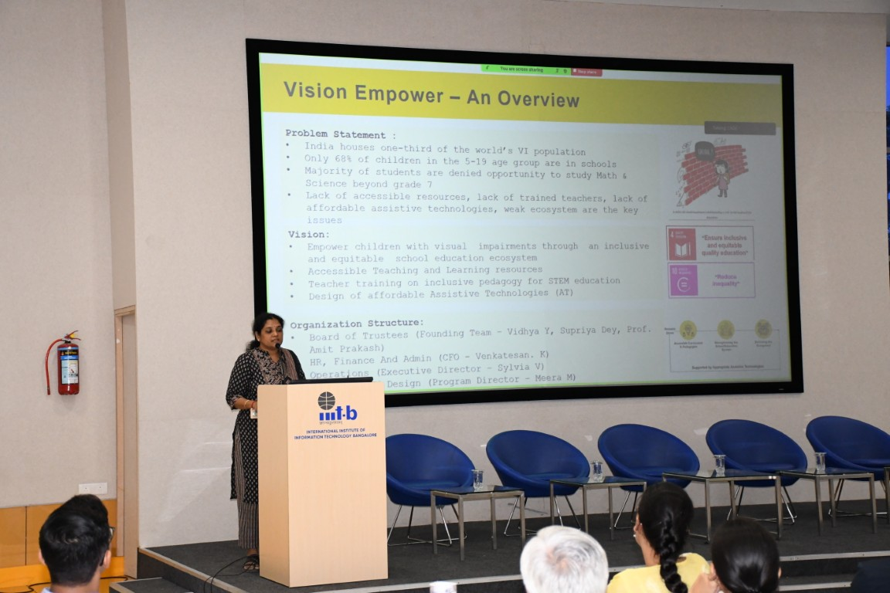 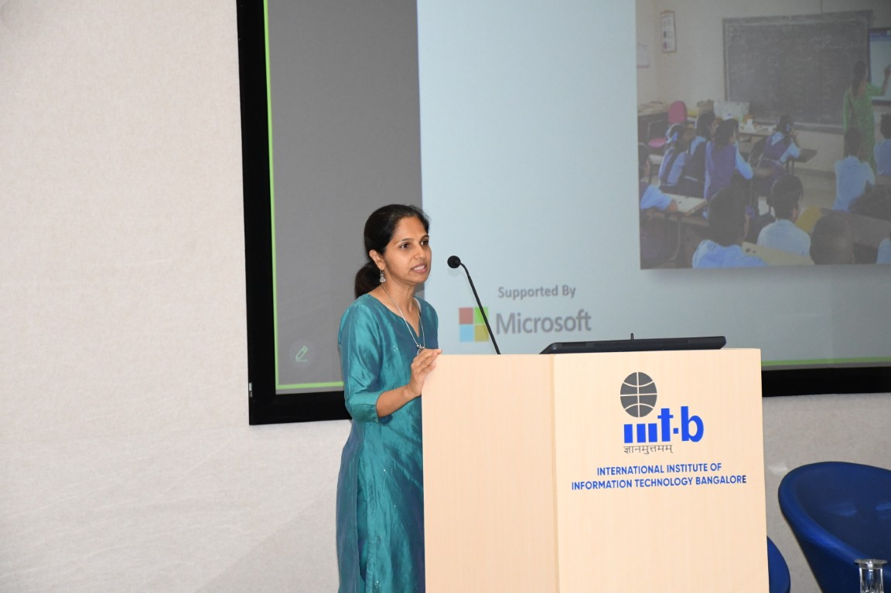 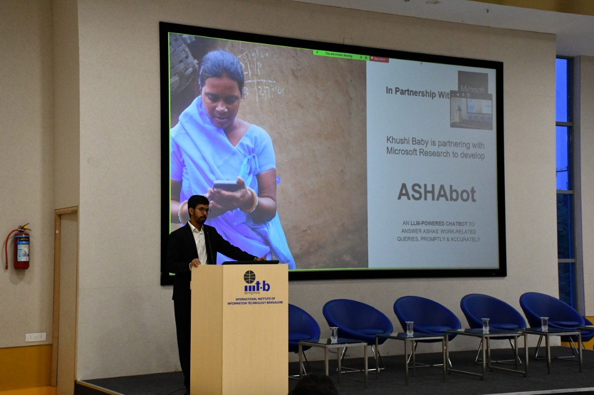 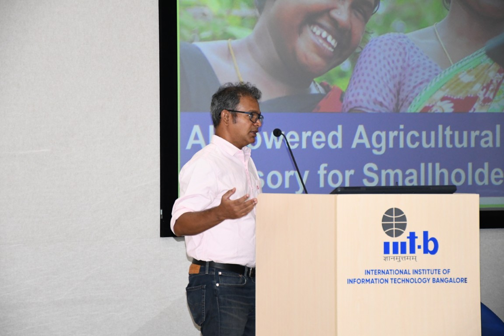 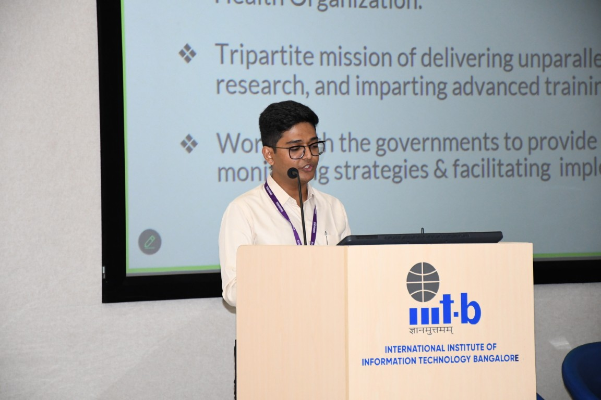Formal Launch by Senior Executives of Microsoft and IIITB
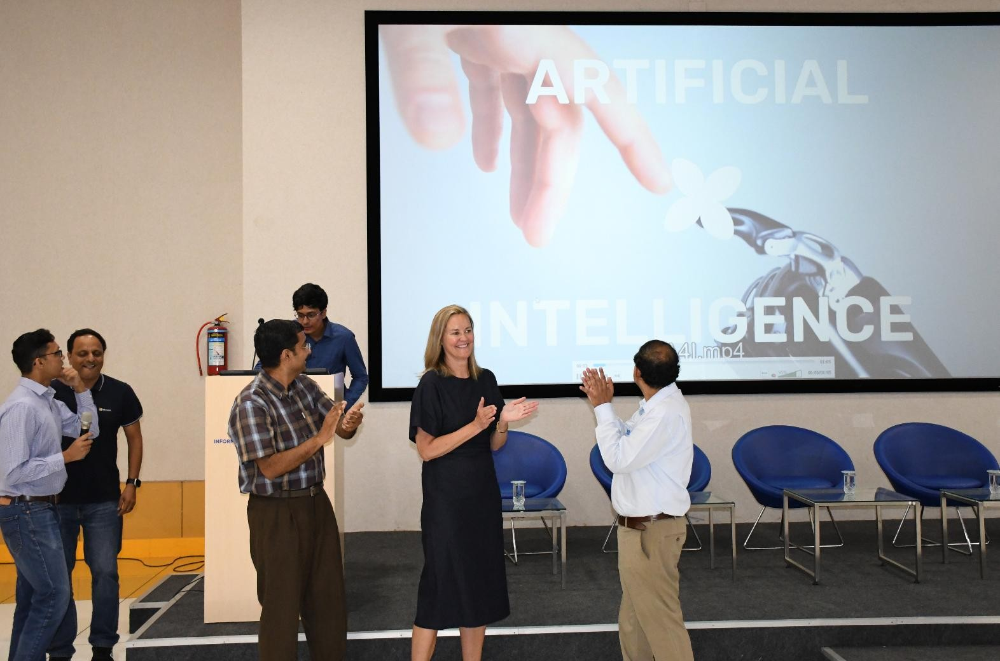Senior leaders from Microsoft India and IIITB formally unveiled the A4I Web Page, and a video was played emphasizing A4I’s “AI for Good” ethos.
Vote of Thanks by Ashish Srivastava, Chief Impact Officer, A4I
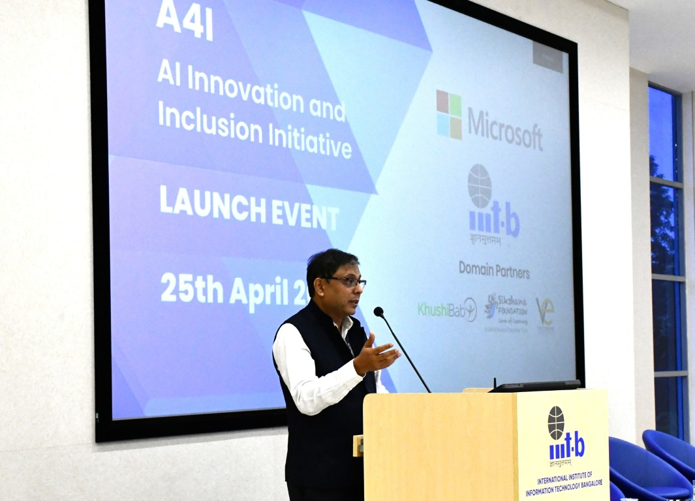Ashish Srivastava concluded the event by thanking all attendees - government representatives, corporate partners, philanthropy-foundation executives, faculty members, and media personnel. He acknowledged Microsoft Philanthropies’ grant, Microsoft Research innovations, the IIIT-B Director's constant support, and the domain partners' commitment. He also thanked the efforts of Microsoft and IIIT-B’s teams for their hard work toward A4I and making the launch event a success.
Networking Lunch
A post-event networking luncheon enabled guests to interact with A4I researchers and domain partners, discuss collaboration opportunities, and share experiences.
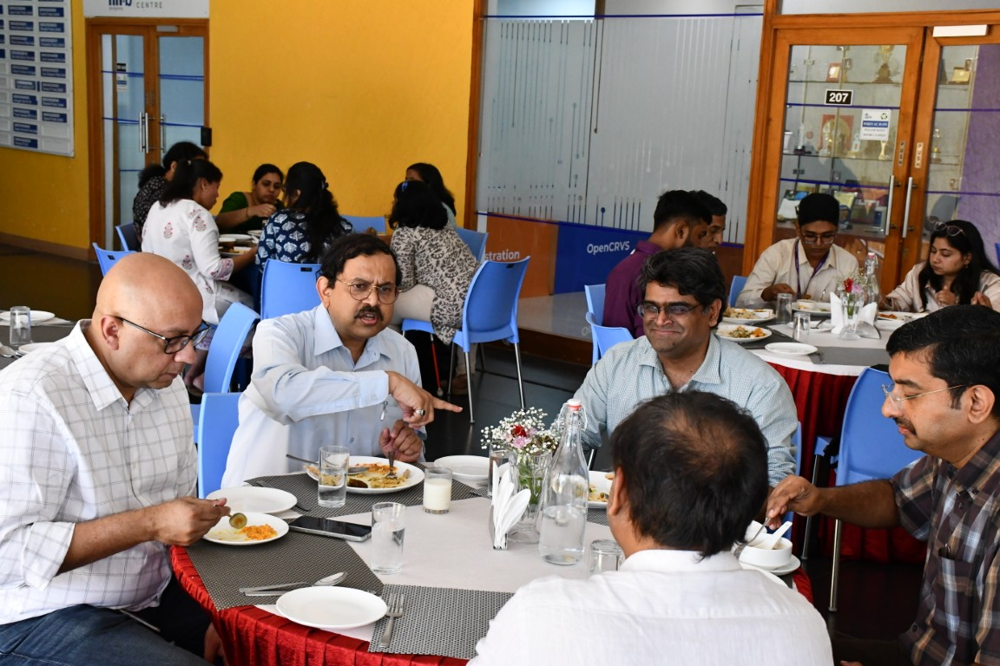 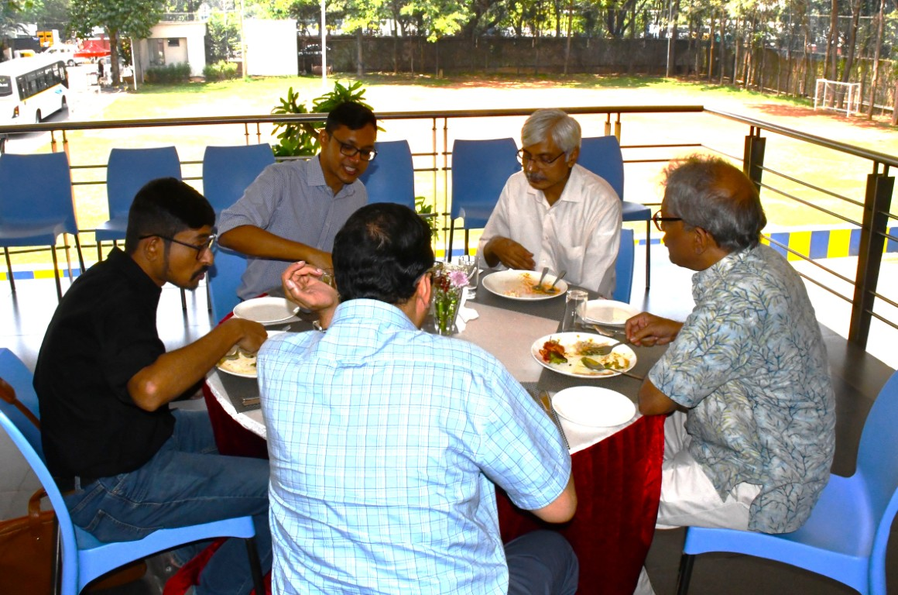